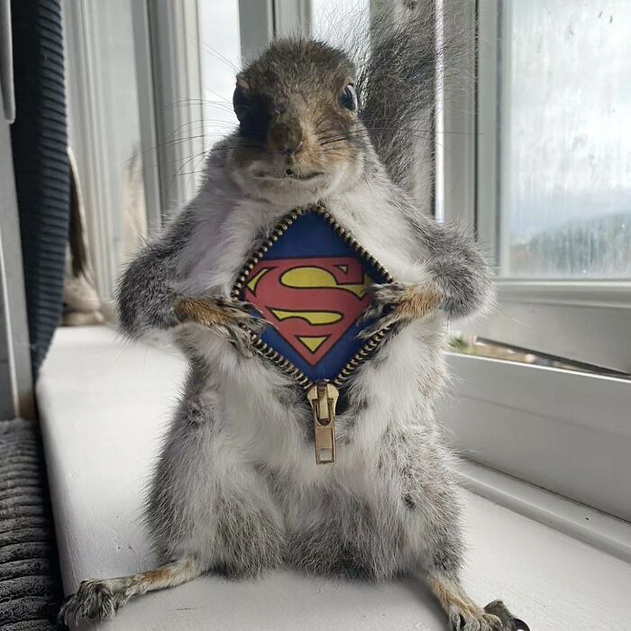
Secret Squirrel Identity
Mild-mannered woodland forager by day, legendary hero by night. This squirrel is ready to save the forest one acorn at a time.
The collection / alternate view

Mild-mannered woodland forager by day, legendary hero by night. This squirrel is ready to save the forest one acorn at a time.
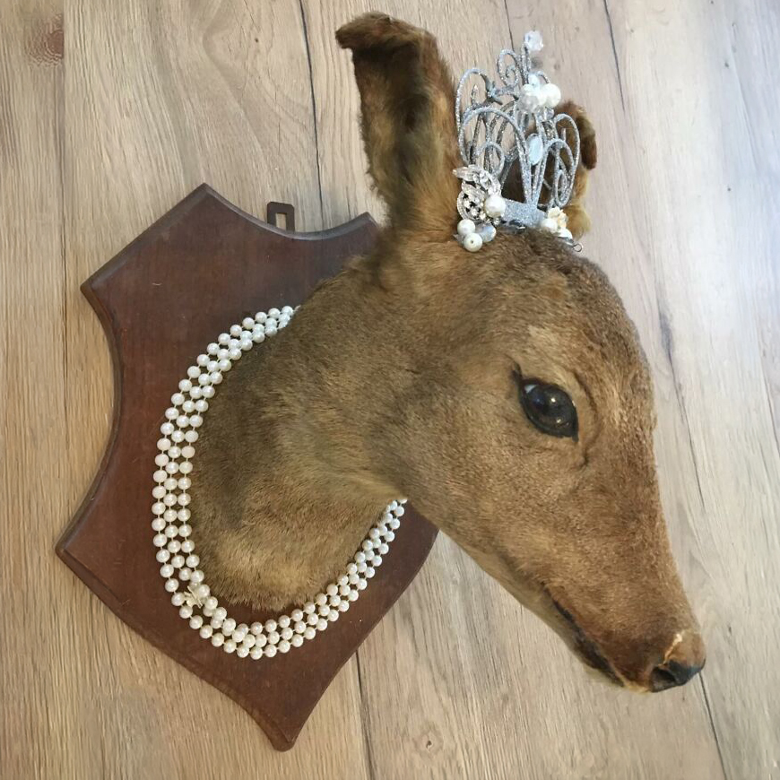
Dressed for a royal engagement that absolutely nobody organized, this deer carries herself with the confidence of a creature that expects you know how to curtsey.
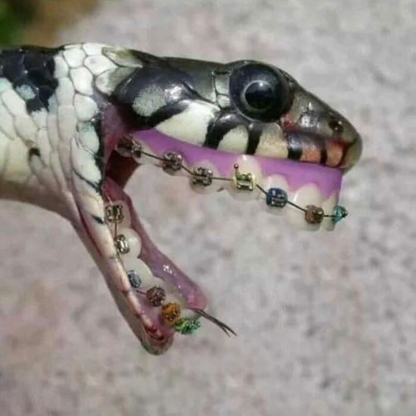
Ssssssssssusan’s orthodontia means she’s a work in progress, but aren’t we all on a journey to become our best ssssssssself?
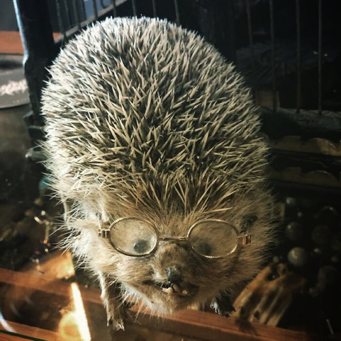
Tenure has done little to soften the sharp edges. Research into proper hibernation techniques will resume once the professor finishes his nap.
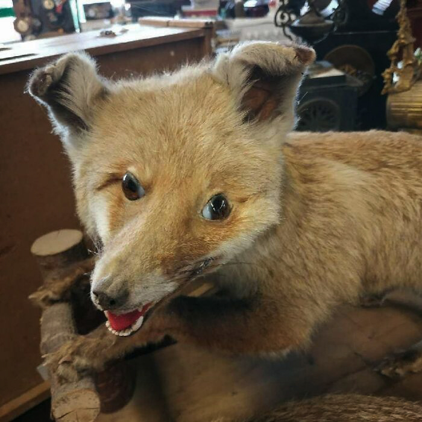
The taxidermist's vision was clear, but then skill got in the way. Festus may no longer resemble other animals of his species, but he thinks it makes him a creature of distinction.
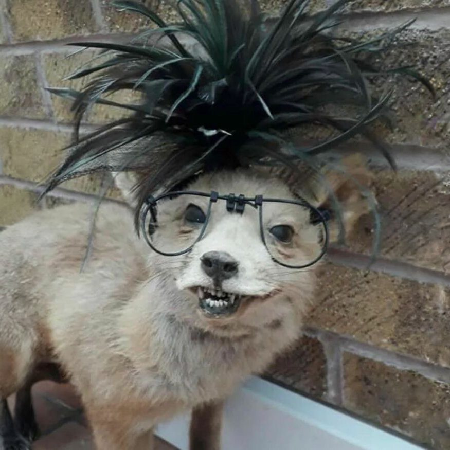
Lucille arrives impeccably dressed for high tea, gossip, and mild scandal. She insists she doesn't start rumors, merely provides them with a supportive environment.
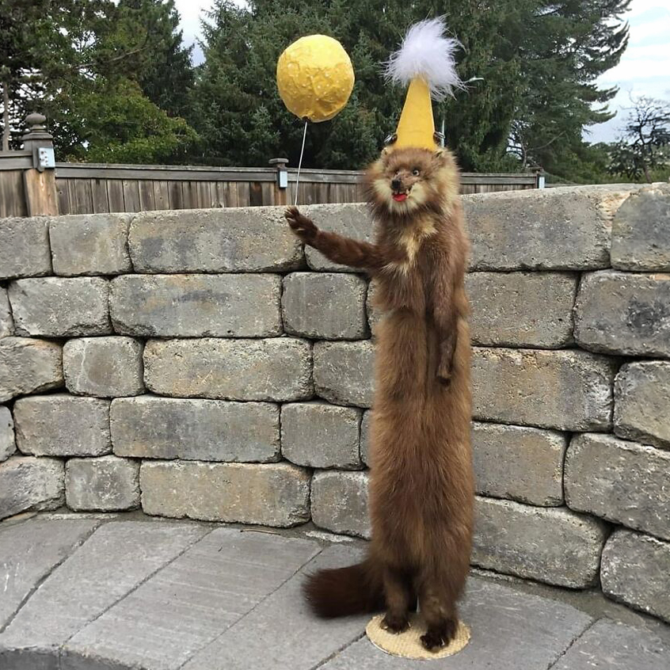
Scientists remain divided on how much stoat is too much stoat. This tall drink of water and party reveler is determined to find out.
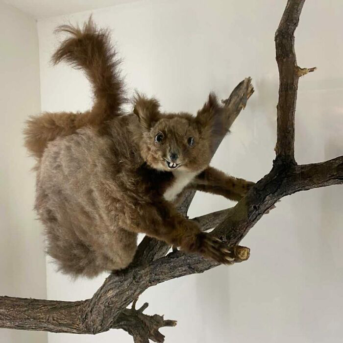
Happily adrift and with more nuts stored for winter than brain cells, Seymour stands as a shining example that complex thoughts are entirely optional.
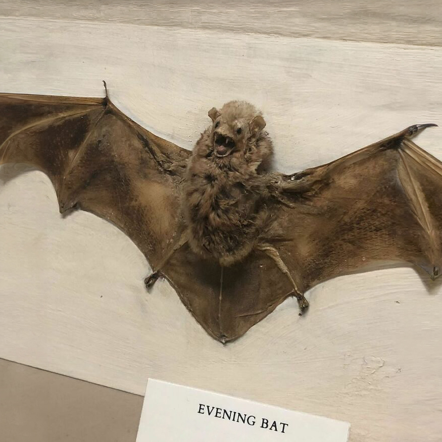
The nightmare is familiar: no notes, no pants, and somehow an entire room is staring. Whatever the plan was, it clearly involved a different bat.
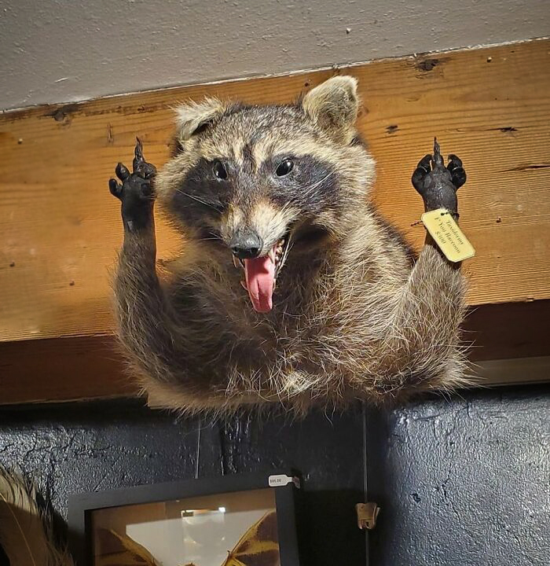
He arrived empty-handed, uninvited, and became the life of the party. The night will almost certainly end with a burning lawn chair.
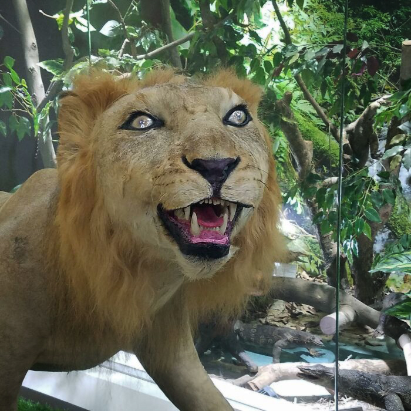
Somewhere between apex predator and Hollywood icon, she’s been divorced 7 times but still channels timeless glamour with a distinctly feline flair.
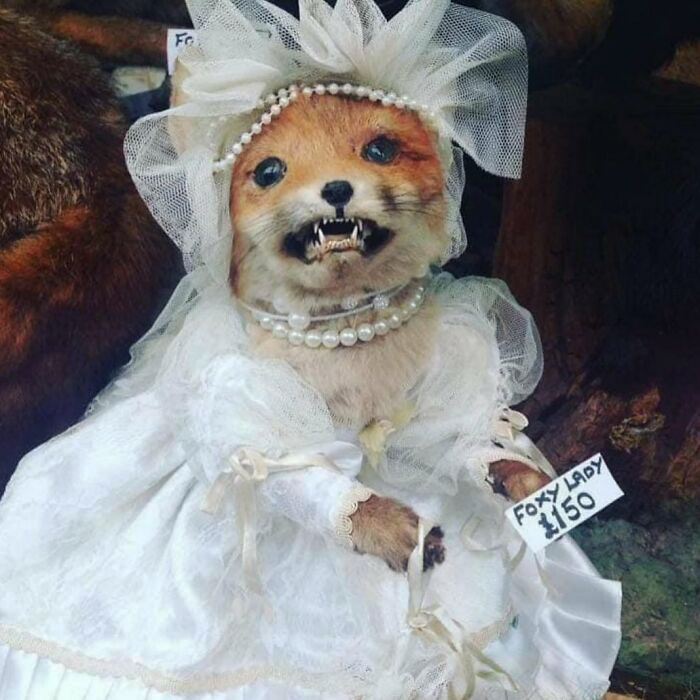
The veil says fairy-tale romance. The expression says an uninvited guest has shown up wearing white.
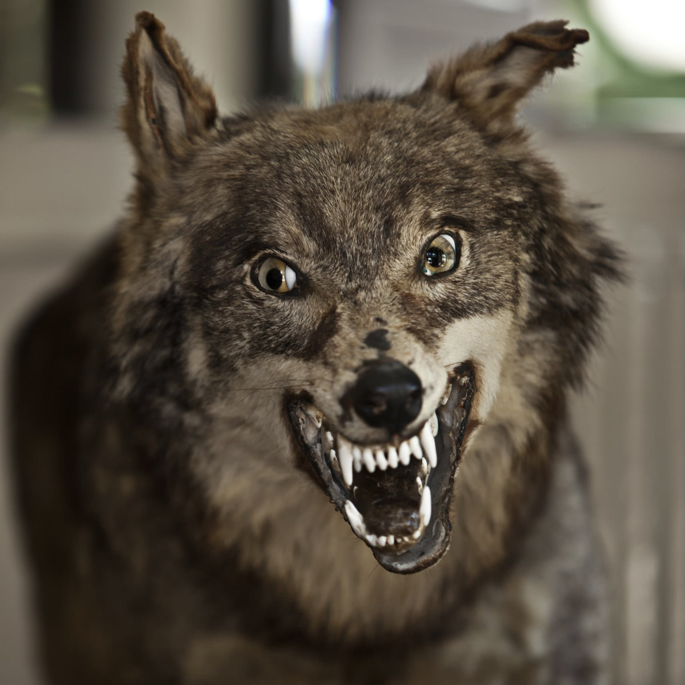
Straw, sticks, or bricks? Structures that fail to meet standards are one huff away from disaster.
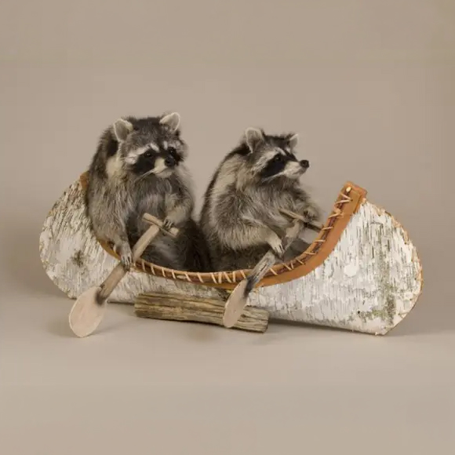
Having watched the movie Deliverance, Edgar and Herald set out on their canoe adventure. Surely, nothing would go wrong.
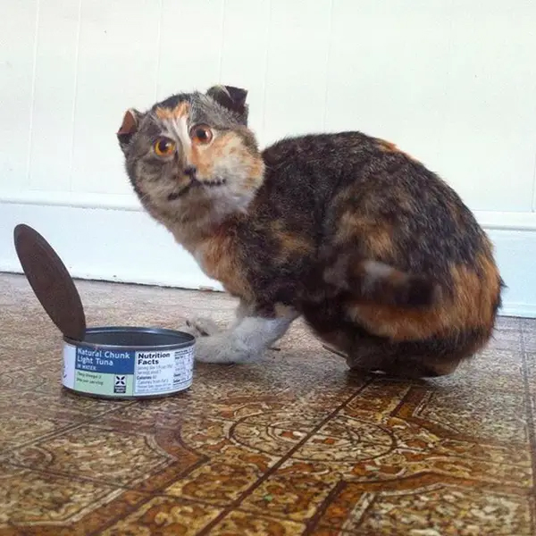
The evidence is undeniable, and the suspect remains at the scene. Whatever happened here, Cattila The Hun would like the record to show it was absolutely worth it.
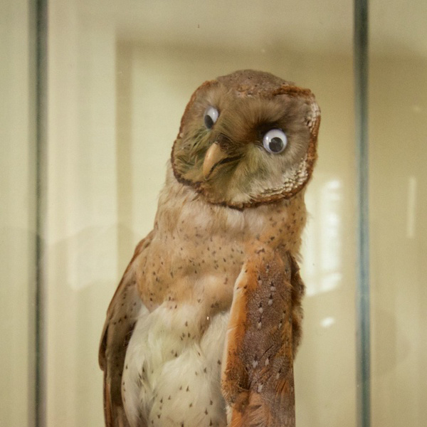
Few can claim Gerald's remarkable field of vision. Unfortunately, Gerald's eyes appear to have accepted assignments in two completely different directions.
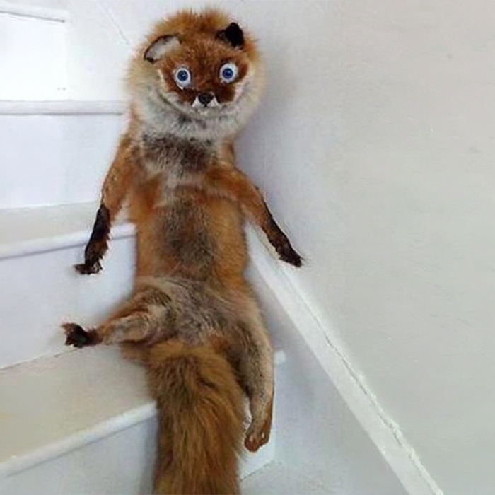
Chester insists the incident was a controlled descent. The bent leg and prolonged stay at the bottom of the stairs suggest otherwise.
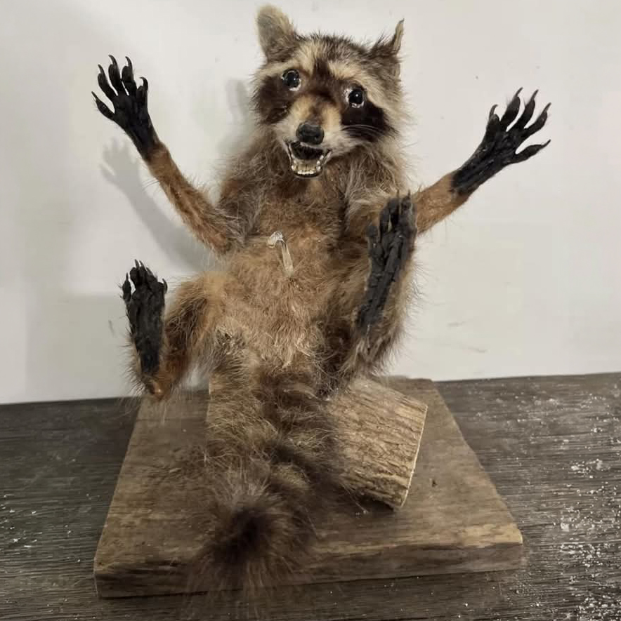
Before this remarkable turnaround, Eugene considered "mild disappointment" an aspirational mood.